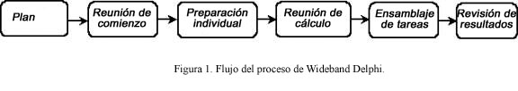
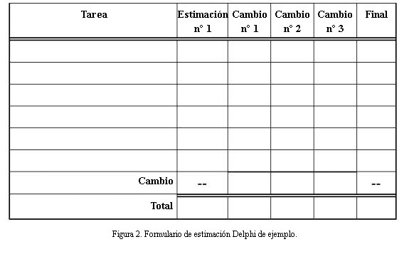
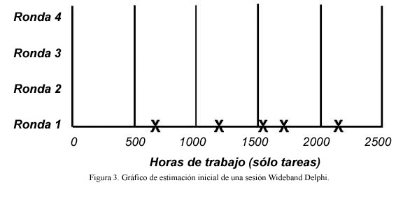
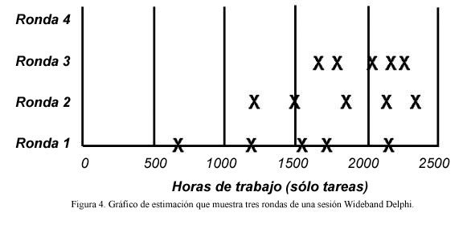

|
Aportado a RUP por Karl Wiegers (www.processimpact.com), con el permiso de Software Development Magazine.
Editado también por Rational Software Corporation.
Introducción
En esta directriz se describe una técnica que se puede utilizar para calcular los esfuerzos de desarrollo de software.
El método de cálculo Delphi de banda ancha se puede resumir del modo siguiente:
-
Seleccione un equipo de expertos, y proporcióneles una descripción del problema que se debe calcular.
-
Solicite a cada experto que proporcione un cálculo (suele ser anónimo) del esfuerzo, incluyendo detalles del
problema en una lista de tareas, y un cálculo del esfuerzo para cada tarea.
-
Los expertos pueden colaborar, revisando sus cálculos repetidamente, hasta que alcancen el consenso.
Con la utilización del método Delphi de banda ancha se proporcionan múltiples ventajas sobre la obtención de un cálculo
de una única persona. Primero, ayuda a construir una lista de tareas completa o estructura detallada de trabajo para
grandes tareas, porque cada participante pensará las tareas. El enfoque de consenso ayuda a eliminar los prejuicios en
los cálculos producidos por expertos autoproclamados, estimadores sin experiencia, o personas influyentes con objetivos
o direcciones divergentes ocultos. Las personas suelen comprometerse más en los cálculos que ayudan a generar que en
los que generan otras personas. Ningún participante de una tarea de cálculo sabe la respuesta "correcta" y, al crear
múltiples cálculos, se demuestra esta incertidumbre. Finalmente, los usuarios del enfoque Delphi reconocen el valor de
la repetición en cualquier tarea compleja.
Aplicación de Delphi de banda ancha
Delphi de banda ancha se puede utilizar para calcular cualquier cosa virtualmente: el número de meses de trabajo
necesarios para implementar un subsistema específico, las líneas de código o el número de clases de un producto
completo, o los litros de pintura necesarios para redecorar la casa de Bill Gates, el esfuerzo que tardará una empresa
concreta en alcanzar el nivel dos del modelo de madurez de posibilidades.
El método Delphi ayuda a desarrollar la estructura detallada de trabajo, que proporciona la base del esfuerzo y la
planificación o el cálculo del tamaño. El punto de partida de una sesión Delphi podría ser un documento de visión, una
especificación de requisitos más detallada del problema que debe calcularse o una descripción de arquitectura de alto
nivel, o la planificación de un proyecto. Los resultados son una lista de tareas del proyecto más detallada; una lista
de tareas de gastos generales, relacionadas con el proceso y asociadas a la calidad; suposiciones de cálculo; y un
conjunto de tareas y cálculos generales del proyecto, uno de cada participante.
La Figura 1 ilustra el flujo del proceso de una sesión Delphi de banda ancha. Se define el problema que se está
calculando y los participantes seleccionados durante la planificación. La reunión de comienzo centra a todos los
estimadores en el problema. A continuación, cada participante prepara de forma individual sus propios cálculos y listas
de tareas iniciales. Aportan dichos elementos a la reunión de cálculo, durante la cual varios ciclos de cálculo llevan
a una lista de tareas más completa y a un conjunto de cálculos revisados. El moderador o el gestor de proyectos
consolida entonces la información de cálculo clasificada fuera de línea, y el equipo revisa los resultados del cálculo.
Cuando se satisfacen algunos criterios de salida predeterminados, se completa la sesión. Es posible que el rango de
cálculos resultantes sea un predictor más realista del futuro que cualquier cálculo en sí mismo. Veamos a su vez cada
uno de los pasos del proceso.

Cuando se planifica una sesión de Delphi de banda ancha, se define el problema y se selecciona a los participantes.
La reunión de comienzo centra a todos los estimadores en el problema. A continuación, cada participante prepara de
forma individual sus propios cálculos y listas de tareas iniciales. Durante la reunión de cálculo, varios ciclos llevan
a una lista de tareas más completa y a un conjunto de cálculos revisados. Entonces la información se consolida fuera de
línea y el equipo revisa los resultados del cálculo. Cuando se satisfacen los criterios de salida, se completa la
sesión.
Planificación
Una sesión Delphi de banda ancha empieza definiendo el problema y su ámbito: visión, modelo de guión de uso, sistema
existente, arquitectura preliminar. Los grandes problemas se descomponen en partes gestionables que se pueden calcular
con mayor precisión, quizá por equipos diferentes. La persona que ha iniciado la tarea de cálculo reúne una
especificación del problema con el objeto de facilitar a los participantes información suficiente para que puedan crear
cálculos creíbles y basados en la información.
Los participantes del cálculo incluyen un moderador, que planifica y coordina la tarea, el gestor de proyectos y de dos
a cuatro estimadores más. El moderador debe disponer de la información suficiente para participar como un estimador,
pero actúa como moderador imparcial, sin falsear los resultados con sus prejuicios o discernimientos. Los participantes
se seleccionan debido a su comprensión del proyecto o problema y las cuestiones de cálculo asociadas.
El comienzo
Una reunión de comienzo inicial de una hora, como máximo, pone en marcha a todos los participantes para acelerar el
problema de cálculo. El moderador explica lo que es Delphi de banda ancha a los miembros del equipo que no están
familiarizados con el mismo, y proporciona el cálculo del problema a los demás estimadores, así como cualquier
suposición o restricción del proyecto. El moderador procura facilitar a los estimadores suficiente información para que
realicen un buen trabajo sin influir indebidamente en sus cálculos.
El equipo revisa los objetivos del cálculo y trata el problema y cualquier cuestión sobre el cálculo. Los participantes
se ponen de acuerdo sobre las unidades de cálculo que van a utilizar como, por ejemplo, semanas, horas de trabajo,
dólares o líneas de código. Si el moderador concluye que todos los miembros del equipo están suficientemente informados
para contribuir en la tarea de cálculo, el grupo está preparado para empezar. Si no es así, es posible que se deba
instruir de forma más completa a los participantes en relación con el problema que están calculando o, posiblemente,
que les deban sustituir otros participantes que puedan generar cálculos más precisos.
Para determinar si está preparado para continuar con la sesión Delphi de banda ancha, compruebe sus criterios de
entrada, es decir, las requisitos que se deben satisfacer para continuar con los pasos del proceso siguientes. Antes de
profundizar en el ejercicio de cálculo, asegúrese de que se han satisfecho las condiciones siguientes:
-
Se han seleccionado los miembros apropiados para el equipo.
-
Se ha celebrado la reunión de comienzo.
-
Los participantes han llegado a un acuerdo sobre el objetivo del cálculo y las unidades.
-
El gestor de proyectos puede participar en la sesión.
-
Los estimadores tienen la información que necesitan para participar de forma efectiva.
Preparación individual
Suponga que desea calcular el esfuerzo de trabajo total (por lo general, expresado en horas de trabajo) que se necesita
para completar un proyecto concreto. Para empezar el proceso de cálculo, cada participante desarrolla
independientemente una lista inicial de las tareas que debe completar para alcanzar el objetivo del proyecto
especificado, utilizando un formulario similar al que se muestra en la Figura 2. A continuación, cada participante
calcula el esfuerzo que consume cada tarea. Divida cada tarea en tareas que sean lo bastante pequeñas para realizar
cálculos precisos. Especifique las tareas de forma clara, puesto que alguien tendrá que fusionar todas las listas de
tareas de los participantes en una única lista compuesta. Totalice los cálculos que produce para cada tarea del
proyecto, en unidades acordadas, para generar el cálculo global inicial.

Para empezar el proceso de cálculo, cada participante utiliza de forma independiente este formulario a fin de
desarrollar una lista inicial de las tareas que debe completar para alcanzar el objetivo del proyecto especificado.
El cálculo no debe tener ninguna relación con la respuesta que piensa que esperan escuchar el gestor de proyectos u
otros interesados. Existe la posibilidad de que el cálculo se sitúe fuera de los límites del proyecto aceptables de
planificación, esfuerzo o coste, una situación que requiera negociación y que pueda llevar a ajustes de recursos,
ampliación de la planificación o reducción del ámbito. Pero no permita que la presión externa influya en su mejor
proyección sobre el desempeño del proyecto.
Además de identificar las tareas del proyecto, registre por separado todas las tareas de soporte o relacionadas. No
olvide listar las tareas que tratan de la gestión, las tareas relacionadas con el proceso y la gestión de la
configuración en el primer ciclo. Incluya tareas de revisión después de las pruebas o tareas de inspección. También
debe planificar la revisión para corregir defectos, que es un hecho que siempre pueden ocurrir. Si realiza un cálculo
de una planificación, acuérdese también de todas las tareas de gastos generales que no son específicas del proyecto y
que es posible que deba construir en la planificación. Pueden incluir reuniones, vacaciones, formación, otras
asignaciones de proyectos y un sinfín de cuestiones que consumen el tiempo a lo largo del día.
Puesto que algunas suposiciones radicalmente diferentes pueden llevar a variaciones importantes de los cálculos, anote
todas las suposiciones que ha hecho mientras preparaba los cálculos. Por ejemplo, si da por supuesto que va a adquirir
una biblioteca de componentes específica o a reutilizar una biblioteca de un proyecto anterior, anótelo. Otro estimador
podría dar por supuesto que el proyecto va a desarrollar dicha biblioteca, lo que podría llevar a una discrepancia
entre ambos cálculos globales.
Recuerde las directrices de cálculo siguientes:
-
Asuma que una persona (usted) va a realizar todas las tareas.
-
Asuma que todas las tareas se van a realizar de forma secuencial; en este momento no se preocupe sobre el
secuenciado y las tareas del predecesor.
-
Asuma que puede dedicar un esfuerzo ininterrumpido a cada tarea (puede parecer de excesivamente optimista, pero
simplifica el proceso de cálculo).
-
En unidades de tiempo de calendario, liste todos los tiempos de espera que tiene previstos encontrar entre las
tareas, lo que, más adelante, le puede ayudar a traducir los cálculos de esfuerzo en cálculos de planificación.
Reunión de cálculo
El moderador empieza la reunión de cálculo recopilando los cálculos individuales de los participantes y creando un
gráfico similar al de la Figura 3. El cálculo del proyecto total de cada participante se muestra como una X en la línea
"Ronda 1". Cada estimador puede ver si su valor inicial se ajusta al espectro. Es posible que los cálculos iniciales
cubran un rango excesivamente amplio. Simplemente, imagínese las distintas conclusiones que podría recopilar sólo si
preguntara a uno de los participantes por su cálculo y lo utilizara para planificar el proyecto.

El moderador empieza la reunión de cálculo recopilando y mostrando en gráficos los cálculos individuales de los
participantes. el cálculo del proyecto total de cada participante se muestra como una X en la línea "Ronda 1". Es
posible que los cálculos iniciales cubran un rango excesivamente amplio.
En algunas organizaciones, el moderador no identifica al autor de cada cálculo; consideran que mantener el anonimato es
un aspecto importante de la técnica Delphi. El anonimato evita que algún compañero pueda intimidar a los demás
participantes con el objeto de que vean las cosas a su modo. También significa que es menos probable que los miembros
del equipo difieran de la opinión del participante más respectado cuando sus propios análisis lleven a conclusiones
diferentes. Pero no es ninguna obligación.
Cada estimador lee su lista de tareas inicial, identificando todas las suposiciones tenidas en cuenta y planteando
todas las preguntas o problemas, sin revelar cuál es su cálculo. Se listan para cada participante las diferentes tareas
que debe llevar a cabo. Al combinar las listas de tareas individuales, se obtiene una lista más completa que la que
podría producir cualquier estimador por sí solo. Esta propuesta puede funcionar para un máximo de varias docenas de
tareas individuales. Si tiene más tareas, es posible que se hayan detallado demasiado. Puede dividir el problema en
varios subproblemas y calcular cada uno de ellos individualmente.
Durante esta discusión inicial, los miembros del equipo también hablan sobre sus suposiciones, cuestiones de cálculo y
preguntas que tienen sobre el problema. El resultado es que el equipo empieza a convergir en un conjunto de
suposiciones compartidas y en una lista de tareas comunes. Conserve esta lista de tareas final para utilizarla como
punto de partida la próxima vez que deba calcular un proyecto similar.
Después de esta discusión inicial, todos los participantes modifican sus cálculos simultáneamente (y en silencio) en la
sala de reuniones. Pueden revisar sus listas de tareas en función de la información que han compartido durante la
discusión, y ajustar sus cálculos de tareas individuales basándose en la nueva comprensión del ámbito de las tareas o
las suposiciones cambiadas. Todos los estimadores pueden añadir nuevas tareas a sus formularios y anotar los cambios
que desean realizar en los cálculos de las tareas iniciales. El cambio esencial de todas las tareas equivale al cambio
en el cálculo del proyecto global de dicho participante.
El moderador recopila los cálculos globales revisados y los traza en el mismo gráfico, en la línea "Ronda 2". Se puede
representar en una pizarra a fin de simplificar su visibilidad. Tal como se muestra en la Figura 4, la segunda ronda
puede llevar a una distribución más restringida de los cálculos centrados en torno a un término medio superior al de
los valores de la Ronda 1. Rondas adicionales deben reducir aún más la distribución. El ciclo de revisión de la lista
de tareas, discusión de suposiciones y problemas, y preparación de nuevos cálculos continúa hasta que se satisfacen las
condiciones siguientes:
-
ha completado cuatro rondas
-
los cálculos convergen en un rango aceptablemente reducido (definido con antelación)
-
se ha cumplido el tiempo de reunión asignado (por lo general, dos horas)
-
ninguno de los participantes desea alterar los últimos cálculos

Después de la discusión de los cálculos iniciales, todos los participantes modifican sus cálculos. El moderador
recopila los cálculos globales revisados y los traza en el mismo gráfico, en la línea "Ronda 2". Estas rondas
siguientes pueden llevar a una distribución más restringida de los cálculos centrados en torno a un término medio
superior al de los valores de la Ronda 1.
El moderador mantiene la línea de trabajo del grupo, con debates dentro de un tiempo fijado de 15 o 20 minutos para
evitar divagaciones sin fin. El moderador debe seguir prácticas eficaces que faciliten la reunión, por ejemplo, empezar
y finalizar a la hora, alentar a todos los participantes para que contribuyan y mantener un entorno no enjuiciable e
imparcial. Mientras que el mantenimiento del anonimato de los cálculos individuales es importante durante las dos
primeras rondas, es posible que en algún momento los miembros del equipo decidan poner todas las cartas sobre la mesa y
buscar la conclusión a través de una discusión abierta. De este modo, se les ofrece la posibilidad de discutir tareas
para las que sus cálculos varían sustancialmente. Aunque, si no es así, el moderador no debe identificar a la persona
que ha producido cada cálculo final hasta que termine la sesión.
Ensamblaje de tareas
El trabajo no finaliza cuando concluye la reunión de cálculo. El moderador o el gestor de proyectos deben ensamblar las
tareas del proyecto y los cálculo individuales en una única lista de tareas maestra. Dicha persona también fusiona las
listas de suposiciones individuales, las tareas relacionadas con la calidad y el proceso, las tareas de gastos
generales y los tiempos de espera.
El proceso de fusión implica eliminar tareas duplicadas y buscar soluciones razonables de cálculos diferentes para
tareas individuales. "Razonable" no significa sustituir los cálculos del equipo por valores que prefiera el gestor de
proyectos. Diferencias importantes en los cálculos para tareas que, en apariencia, son similares, pueden indicar que
los estimadores interpretan dicha tarea de modos distintos. Por ejemplo, es posible que dos personas tengan una tarea
que se llame "implementar una clase". Sin embargo, un estimador puede haber incluido la prueba de unidad y revisión de
código en la tarea, mientras que el otro sólo tenía por objetivo el esfuerzo de codificación. Todos los estimadores
deben definir sus tareas con claridad, a fin de minimizar la confusión durante este paso de fusión. El paso de fusión
debe mantener el rango de cálculos para cada tarea, pero si el cálculo de tareas de un estimador presenta diferencias
importantes con respecto a las de los demás estimadores, tras su comprensión se puede descartar o modificar.
Resultados de la revisión
En el paso final, el equipo de cálculo revisa los resultados resumidos y busca un acuerdo sobre el resultado final. El
gestor de proyectos facilita a los demás estimadores la lista de tareas global, los cálculos individuales, los cálculos
acumulativos, las lista de suposiciones y cualquier otra información de la que disponga. Vuelve a reunir al equipo para
una reunión de revisión de 30 a 60 minutos con el objeto de concluir la tarea de cálculo. En esta reunión el equipo
tiene la oportunidad de contemplar la ejecución del proceso Delphi de banda ancha y de sugerir modos por los que se
podría mejorar para futuras aplicaciones.
Los participantes deben asegurarse de que la lista de tareas final esté tan completa como sea posible. Es posible que
hayan pensado en tareas adicionales desde la reunión de cálculo, y ahora pueden añadirlas a la lista de tareas. Se debe
comprobar que las tareas que presentaban cálculos individuales muy diferentes se hayan fusionado de modo lógico. El
objetivo fundamental es producir un rango de cálculos que permita que el gestor de proyectos y los demás interesados
puedan continuar con la planificación y ejecución de proyectos con un nivel de seguridad aceptable.
Cómo completar el cálculo
El proceso de cálculo se completa cuando se satisfacen los criterios de salida especificados. Llegados a este punto, se
puede declarar victoria y seguir adelante. Los criterios de salida de Delphi de banda ancha típicos son que:
Se haya ensamblado la lista de tareas global.
Se disponga de una lista resumida de suposiciones de cálculo.
Los estimadores hayan alcanzado el consenso sobre cómo sintetizar los cálculos individuales en un solo conjunto con un
rango aceptable.
Ahora debe decidir qué hacer con los datos. Puede calcular el término medio de los cálculos finales para obtener un
cálculo de un único punto que, probablemente, sea lo que desea oír la persona que ha solicitado el cálculo. Sin
embargo, es posible que un simple promedio sea demasiado escaso, y mantener el rango de cálculos tiene su mérito. Los
cálculos son predicciones del futuro, y el rango refleja la incertidumbre inherente a fijar la mirada en la bola de
cristal. Puede presentar tres números: el promedio de los cálculos como caso planificado, el valor mínimo como el mejor
caso y el máximo como el peor caso. O bien, puede presentar el valor de promedio como resultado esperado nominal, más
el valor máximo menos el promedio y menos el valor de promedio menos el mínimo.
Cada cálculo tiene un probabilidad concreta de ser verdadera, de modo que un conjunto de cálculos forma una
distribución de probabilidades. En el Capítulo 6 de la publicación Discipline for Software Engineering (Addison-Wesley,
1995), Watts Humphrey describe un procedimiento preciso matemáticamente para combinar varios cálculos y sus
incertidumbres con el objeto de generar un cálculo global con intervalos de predicción superior e inferior. Otra
propuesta sofisticada consiste en realizar una simulación Monte Carlo para generar una distribución de probabilidades
de resultados de cálculos posibles en base a los valores de los cálculos finales.
Mientras que los resultados de una sesión Delphi no sean, posiblemente, lo que los promotores e interesados quieren
oír, pueden decidir si desean planificar el proyecto con un nivel de seguridad del 10 por ciento, del 90 por ciento o
en algún nivel intermedio. Compare los resultados del proyecto real con los cálculos a fin de mejorar la precisión de
los cálculos futuros.
Repetición (Iteración)
Uno de los aspectos más atractivos de este método es que después de un cálculo inicial y más bien aproximado realizado,
por ejemplo, durante el comienzo, los cálculos se pueden perfeccionar en cada fase (o, incluso, en cada iteración). El
proceso puede resultar más rápido si están disponibles los mismos estimadores, y empiezan a partir del punto en el que
lo dejaron en el ciclo de cálculo anterior. Se dispone de más información sobre el problema, se han modificado algunas
suposiciones y existe una arquitectura que ayuda a dividir el esfuerzo.
El nuevo cálculo puede tener un rango más reducido, pero puede no encontrarse, necesariamente, dentro del rango del
anterior: puede ser o menos amplio. Si es más amplio, existe una señal clara de riesgo para el gestor de proyectos que
se debe abordar en seguida.
Delphi de banda ancha evaluado
Ningún método de cálculo es perfecto; si lo fuera, se denominaría predicción, no cálculo. Sin embargo, la técnica
Delphi de banda ancha incorpora algunos principios de cálculo sólidos. El enfoque del equipo demuestra el valor de
combinar las perspectivas de múltiples expertos. El rango de cálculos producidos refleja la variabilidad intrínseca al
proceso de cálculo.
Aunque se tarda algún tiempo y requiere un equipo de personal experimentado, Delphi de banda ancha elimina algunas de
las políticas de cálculo y filtra los valores iniciales.
|